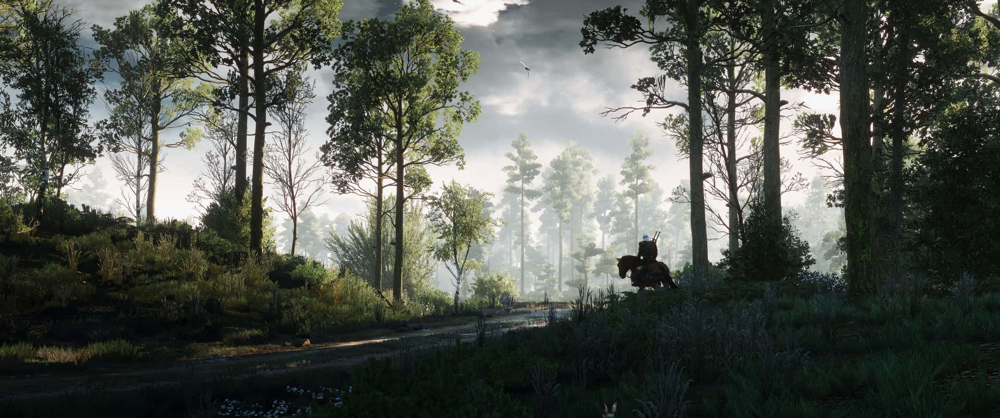

My Favourite Video Games
Welcome to the blog about my favourite video games! I am Akshat Mathur, and I love to play video games. Join me to discover some of my favourite video games of all time. This blog will showcase all about the epic games that I love. Whether you are a casual gamer or a seasoned one like me, I'm sure you will discover your next favourite game and gain insights on what makes these games so great. Let's explore the world of video gaming together!
